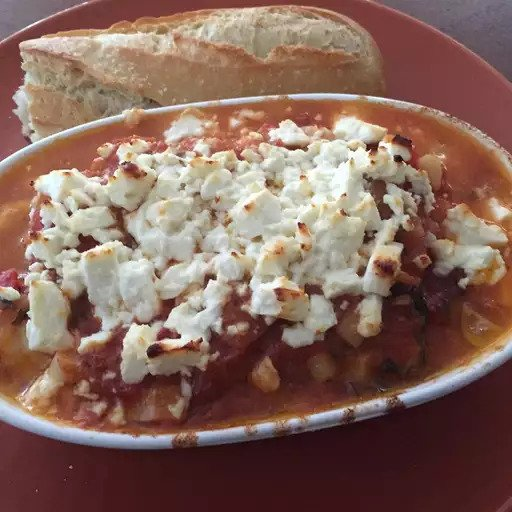

Shrimps Saganaki(Greek Recipe)

This is a Greek starter recipe that is also eaten as an ouzo 'meze' (snack). It is a delicious dish that I'd only tried in restaurants but when I tried to make it at home I found out I made it as good and delicious. With a small alteration of adding pasta you can turn this dish into a delicious seafood pasta dish.
Time: 5 mins
Cook Time: 35 mins
Total Time: 40 mins
Servings: 4
Yield: 4 servings
Ingedients
- 1 pound medium shrimp, with shells
- 1 onion, chopped
- 2 tablespoons chopped fresh parsley
- 1 cup white wine
- 1 (14.5 ounce) can diced tomatoes, drained
- ¼ teaspoon garlic powder (Optional)
- ¼ cup olive oil
- 1 (8 ounce) package feta cheese, cubed
- 1 pinch salt and pepper to taste
Directions
- Bring about 2 inches of water to a boil in a large saucepan. Add the shrimp, the water should just cover them. Boil for 5 minutes, then drain, reserving the liquid, and set aside.
- Heat about 2 tablespoons of oil in a saucepan. Add the onions; cook and stir until the onions are soft. Mix in the parsley, wine, tomatoes, garlic powder, and remaining olive oil. Simmer, stirring occasionally, for about 30 minutes, or until the sauce is thickened.
- While the sauce is simmering, the shrimps should have become cool enough to handle. First remove the legs by pinching them, and then pull off the shells, leaving the head and tail on.
- When the sauce is thickened, stir in the shrimp stock and shrimp. Bring to a simmer, and cook for about 5 minutes. Add the feta cheese and remove from the heat. Let stand until the cheese starts to melt. Serve warm.